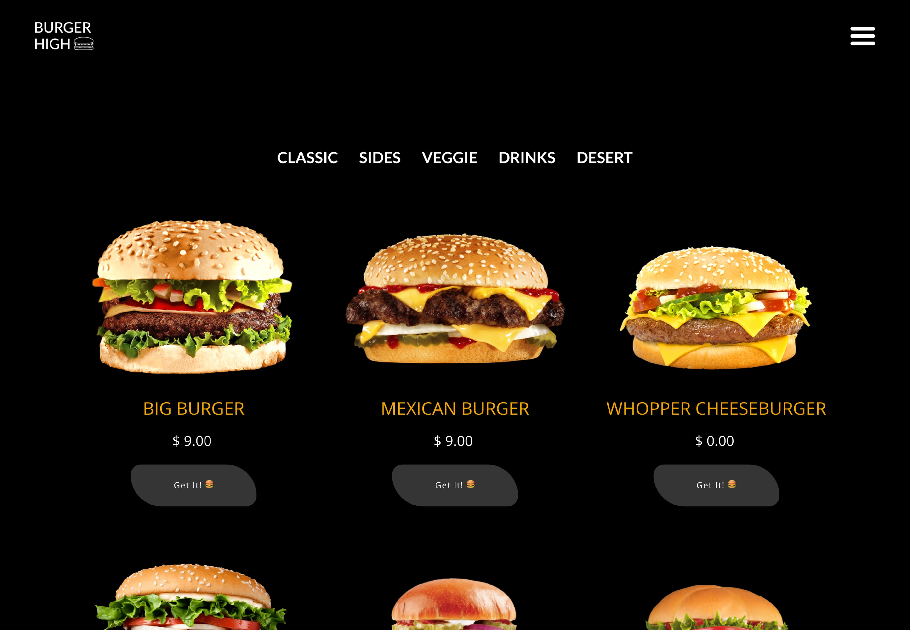
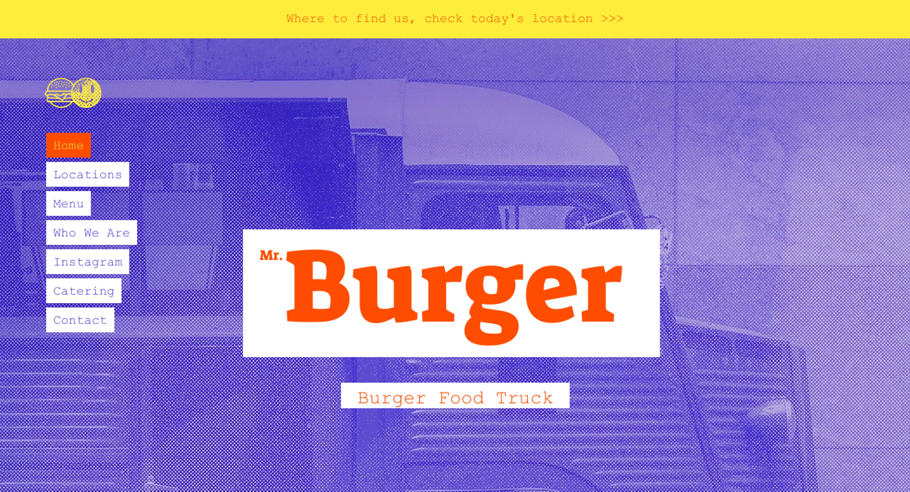
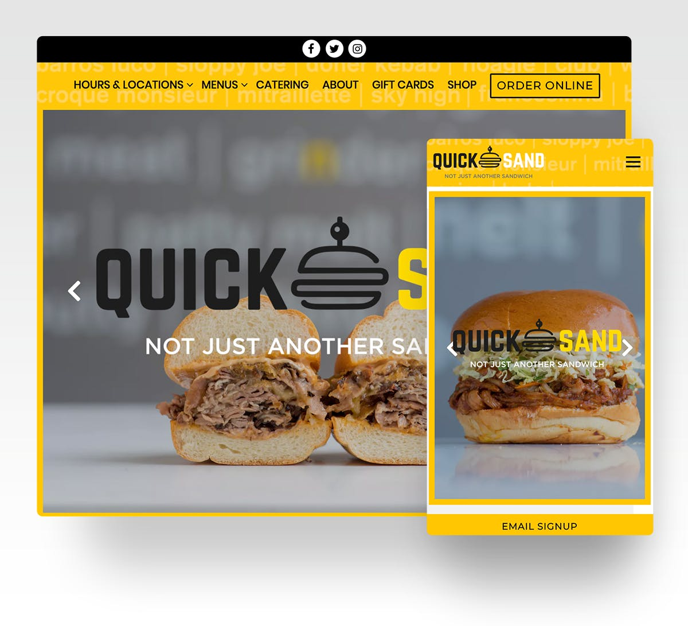
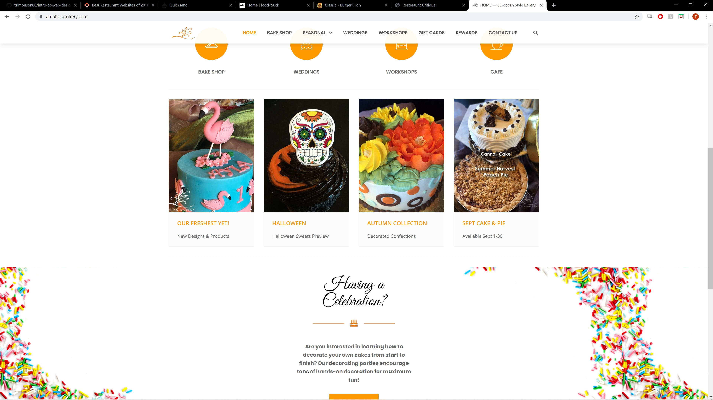

This website is very well designed and functional. The site is very sleek and minimalist but it still has all the necessary functionality. Lot of "modern" sites try to be very minimal with their design and can be fairly hard to navigate as a result, but this site tries to combine the pleasing astetic with functionality.
Burger High has a really good menu design and thats why I picked it. Most menus will give you a description of what an item is but burger high takes it a step further and actually gives you pictures of every item instead. This would be very helpful when ordering as you already know exactly what it will look like.
Mr.Burger has a very unique design astetic. Its hard to place exactly what the astetic is but it feels very small time and quaint. The picture have a newspaper look to them which just makes the restaurant feel really unique. The point of the website is to convince you to come eat there and I think this site excels at that with its unique design.
I think the best thing about quick sand is its home page image. Sandwiches aren't anything new so its hard to sound unique from what they are selling. So they use an image of one of their sandwiches where you can see the inside as the first thing you see to catch you eye and show you what makes them unique. The site is very well laid out and easy to use.
Amphora has a nice touch that not only does it give you all their locations and ways to contact them but it has built in hyperlinks to make contacting them easier and more mobile friendly. Bakerys are a dime a dozen so they show off their specalty, cakes, right at the top of the site and even try to show special event type of cake that people wouldn't normally think about to help people think about them for any occasion.